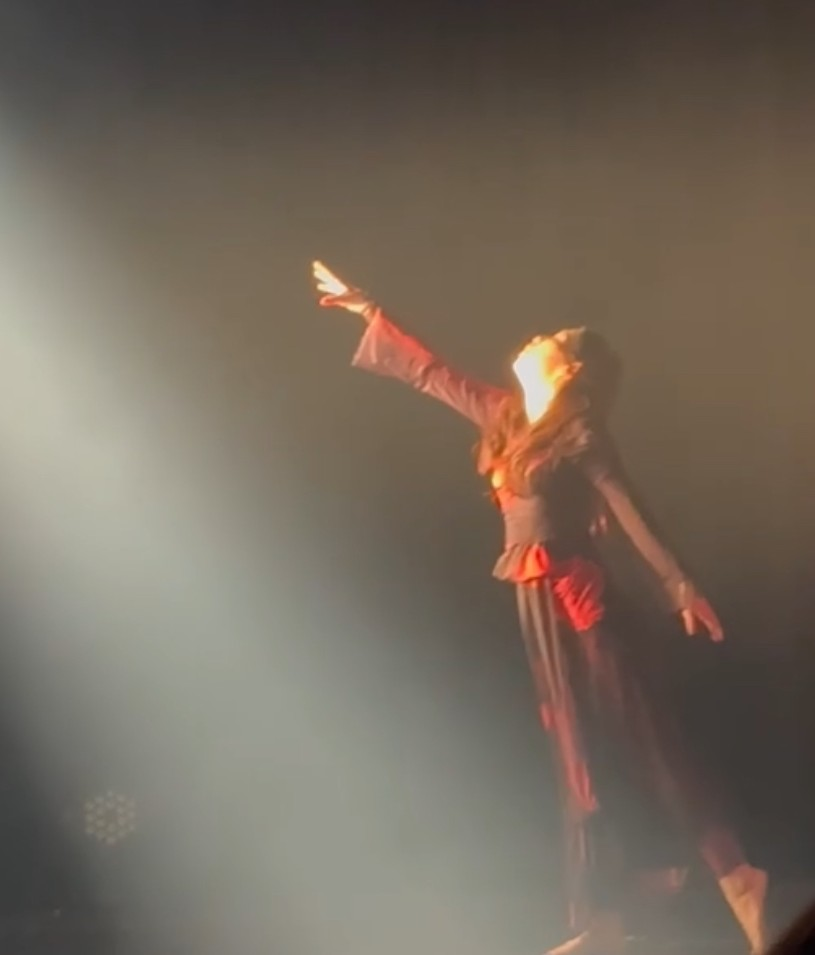

はじめまして。
JAZZ dancer のQooと申します。
このページをご覧いただきありがとうございます。
私がJAZZダンスに出会ったのは20代。
「やってみたい」と思いながらも一歩踏み出せずにいた時期を経て、
仕事中心の生活に少し疲れてしまい、「通える日だけでもいいからやってみよう」と思い立って体験レッスンに参加したことが始まりでした。
できなくて悔しい日もありましたが、その分できた時の喜びは大きく、
何よりも一緒に踊る仲間や先生との出会いは、私の人生の大切な宝物です。
大人になってから始めた経験があるからこそ、
「社会人からでも遅くない」「自分のペースで楽しめる」
そんな想いを、これからダンスを始めたい方に伝えていきたいと思っています。
まずは、体験してみることから。
JAZZダンスが気になっている方、ぜひ一度覗きに来てください。

ダンサーネーム：Qoo
ジャンル： JAZZ
子どもの頃は音楽教室のミュージカルクラスに通い、
学生時代は服飾科でデザインを学び、
ファッションショーのステージに立つなど、
振り返れば“表現すること”がずっと好きでした。
大人になってからもダンスへの憧れは消えず、
仕事に追われる日々の中で「楽しめる趣味がほしい」と思い、
さまざまなジャンルの体験レッスンに参加。
その中で、感情表現を大切にするJAZZダンスに強く惹かれ、
本格的に学び始めました。
しなやかさと力強さ、自由な表現が共存するJAZZダンス。
その魅力を、自分らしく、
そして大人から始める方にも寄り添いながら伝えていきます。
ダンサーネーム：Qoo
ジャンル： JAZZ
子どもの頃は音楽教室のミュージカルクラスに通い、
学生時代は服飾科でデザインを学び、
ファッションショーのステージに立つなど、
振り返れば“表現すること”がずっと好きでした。
大人になってからもダンスへの憧れは消えず、
仕事に追われる日々の中で「楽しめる趣味がほしい」と思い、
さまざまなジャンルの体験レッスンに参加。
その中で、感情表現を大切にするJAZZダンスに強く惹かれ、
本格的に学び始めました。
しなやかさと力強さ、自由な表現が共存するJAZZダンス。
その魅力を、自分らしく、
そして大人から始める方にも寄り添いながら伝えていきます。